|
|
< Day Day Up > |
|
Around A.D. 100, the Chinese mathematician Sun-Tsu solved the problem of finding those integers x that leave remainders 2, 3, and 2 when divided by 3, 5, and 7 respectively. One such solution is x = 23; all solutions are of the form 23 + 105k for arbitrary integers k. The "Chinese remainder theorem" provides a correspondence between a system of equations modulo a set of pairwise relatively prime moduli (for example, 3, 5, and 7) and an equation modulo their product (for example, 105).
The Chinese remainder theorem has two major uses. Let the integer n be factored as n = n1n2 nk, where the factors ni are pairwise relatively prime. First, the Chinese remainder theorem is a descriptive "structure theorem" that describes the structure of Zn as identical to that of the Cartesian product 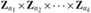 with componentwise addition and multiplication modulo ni in the ith component. Second, this description can often be used to yield efficient algorithms, since working in each of the systems 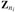 can be more efficient (in terms of bit operations) than working modulo n.
Let n = n1n2 nk, where the ni are pairwise relatively prime. Consider the correspondence
| (31.23) | 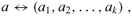 |
where a ∈ Zn, 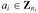, and
ai = a mod ni
for i = 1, 2, ..., k. Then, mapping (31.23) is a one-to-one correspondence (bijection) between Zn and the Cartesian product 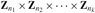. Operations performed on the elements of Zn can be equivalently performed on the corresponding k-tuples by performing the operations independently in each coordinate position in the appropriate system. That is, if
a ↔ (a1, a2, ..., ak),
b ↔ (b1, b2, ..., bk),
then
| (31.24) | 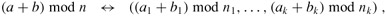 |
| (31.25) | 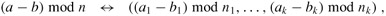 |
| (31.26) | 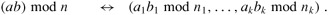 |
Proof Transforming between the two representations is fairly straightforward. Going from a to (a1, a2, ..., ak) is quite easy and requires only k divisions. Computing a from inputs (a1, a2, ..., ak) is a bit more complicated, and is accomplished as follows. We begin by defining mi = n/ni for i = 1, 2, ..., k; thus mi is the product of all of the nj's other than ni: mi = n1n2 · · · ni-1ni+1 · · · nk. We next define
| (31.27) | 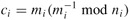 |
for i = 1, 2, ..., k. Equation (31.27) is always well defined: since mi and ni are relatively prime (by Theorem 31.6), Corollary 31.26 guarantees that (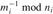) exists. Finally, we can compute a as a function of a1, a2, ..., ak as follows:
| (31.28) | 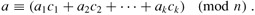 |
We now show that equation (31.28) ensures that a ≡ ai (mod ni) for i = 1, 2, ..., k. Note that if j ≠ i, then mj ≡ 0 (mod ni), which implies that cj ≡ mj ≡ 0 (mod ni). Note also that ci ≡ 1 (mod ni), from equation (31.27). We thus have the appealing and useful correspondence
ci ↔ (0, 0, ..., 0, 1, 0, ..., 0),
a vector that has 0's everywhere except in the ith coordinate, where it has a 1; the ci thus form a "basis" for the representation, in a certain sense. For each i, therefore, we have
|
a |
≡ |
aici |
(mod ni) |
|
≡ |
aimi(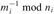) |
(mod ni) |
|
|
≡ |
ai |
(mod ni), |
which is what we wished to show: our method of computing a from the ai's produces a result a that satisfies the constraints a ≡ ai (mod ni) for i = 1, 2, ..., k. The correspondence is one-to-one, since we can transform in both directions. Finally, equations (31.24)-(31.26) follow directly from Exercise 31.1-6, since x mod ni = (x mod n) mod ni for any x and i = 1, 2, ..., k.
The following corollaries will be used later in this chapter.
If n1, n2, ..., nk are pairwise relatively prime and n = n1n2 nk, then for any integers a1, a2, ..., ak, the set of simultaneous equations
x ≡ ai (mod ni),
for i = 1, 2, ..., k, has a unique solution modulo n for the unknown x.
If n1, n2, ..., nk are pairwise relatively prime and n = n1n2 · · · nk, then for all integers x and a,
x ≡ a (mod ni)
for i = 1, 2, ..., k if and only if
x ≡ a (mod n).
As an example of the application of the Chinese remainder theorem, suppose we are given the two equations
|
a |
≡ |
2 (mod 5), |
|
a |
≡ |
3 (mod 13), |
so that a1 = 2, n1 = m2 = 5, a2 = 3, and n2 = m1 = 13, and we wish to compute a mod 65, since n = 65. Because 13-1 ≡ 2 (mod 5) and 5-1 ≡ 8 (mod 13), we have
|
c1 |
= |
13(2 mod 5) |
= |
26, |
|
c2 |
= |
5(8 mod 13) |
= |
40, |
and
|
a |
≡ |
2 · 26 + 3 · 40 |
(mod 65) |
|
≡ |
52 + 120 |
(mod 65) |
|
|
≡ |
42 |
(mod 65). |
See Figure 31.3 for an illustration of the Chinese remainder theorem, modulo 65.
|
0 |
1 |
2 |
3 |
4 |
5 |
6 |
7 |
8 |
9 |
10 |
11 |
12 |
|
|---|---|---|---|---|---|---|---|---|---|---|---|---|---|
|
|
|||||||||||||
|
0 |
0 |
40 |
15 |
55 |
30 |
5 |
45 |
20 |
60 |
35 |
10 |
50 |
25 |
|
1 |
26 |
1 |
41 |
16 |
56 |
31 |
6 |
46 |
21 |
61 |
36 |
11 |
51 |
|
2 |
52 |
27 |
2 |
42 |
17 |
57 |
32 |
7 |
47 |
22 |
62 |
37 |
12 |
|
3 |
13 |
53 |
28 |
3 |
43 |
18 |
58 |
33 |
8 |
48 |
23 |
63 |
38 |
|
4 |
39 |
14 |
54 |
29 |
4 |
44 |
19 |
59 |
34 |
9 |
49 |
24 |
64 |
Thus, we can work modulo n by working modulo n directly or by working in the transformed representation using separate modulo ni computations, as convenient. The computations are entirely equivalent.
Find all integers x that leave remainders 1, 2, 3 when divided by 9, 8, 7 respectively.
Under the definitions of Theorem 31.27, prove that for any polynomial f, the number of roots of the equation f(x) ≡ 0 (mod n) is equal to the product of the number of roots of each of the equations f(x) ≡ 0 (mod n1), f(x) ≡ 0 (mod n2), ..., f(x) ≡ 0 (mod nk).
|
|
< Day Day Up > |
|